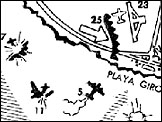

The Bay of Pigs Invasion
by Jon Elliston
Dossier Editor
pscpdocs@aol.com
On April 17, 1961, approximately 1,300 members of a CIA-supported counter-revolutionary Cuban exile force stormed the beaches of Cuba, beginning a brief military adventure which ended in total failure. The incident quickly became a foreign policy debacle for President Kennedy, who approved the plan just three months into his presidency. This special report provides a historical retrospective of the Bay of Pigs invasion and the events leading up to it.
(c) Copyright 1996 ParaScope, Inc.